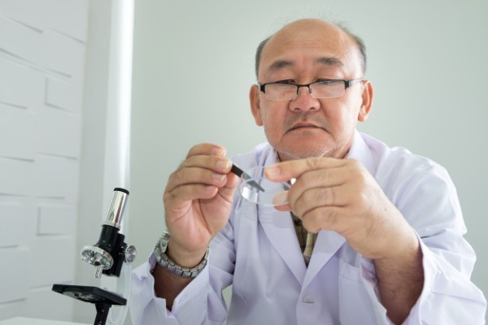
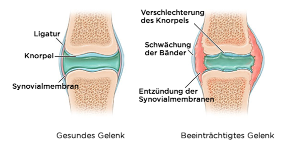

"Die Methoden der Behandlung von Gelenken, die in Europa benutzt sind, scheinen überhaupt nicht bequem zu sein". Der berühmte japanische Rheumatologe gab der deutschen Redaktion ein offenes Interview
Dr. Sho Takahashi ist Leiter des weltberühmten Zentrums für Rheumatologie und Neurologie in Tokio
Es gibt nur eine Ursache für Gelenkerkrankungen, die jedoch von europaischen Ärzten völlig ignoriert wird.
Dr. Sho Takahashi: "In Europa werden Gelenkerkrankungen immer noch mit veralteten und unwirksamen Medikamenten behandelt, die lebenslang ständig angewendet werden müssen. Während in Japan werden Gelenke so leicht wie eine Erkältung behandelt."
Letztes Jahr reiste Sho Takahashi nach Deutschland, um die Erfahrungen seiner europäischen Kollegen zu untersuchen. Was er in Deutschland gesehen hat, kann seiner Meinung nach nicht erklärt werden. In unserem Land, nach Sho, bleibt Rheumatologie in ihrer Entwicklung auf dem Niveau der Mitte des letzten Jahrhunderts.
Nach einigen Interviews in Japan gab Dr. Sho Takahashi seine Zustimmung für ein Interview mit unserer deutschen Redaktion. Was mochte der berühmte Arzt in der deutschen Medizin nicht? Und warum sagen Sie, dass die Deutsche, die an erkrankten Gelenken leiden, niemals geheilt werden können?
Im Gespräch mit japanischen Journalisten sagten Sie, dass das, was Sie in Deutschland gesehen hätten, Sie schockiert habe. Könnten Sie kommentieren?
Zuallererst möchte ich sagen, dass ich Deutschland, seine Kultur und seine Bürger wirklich mag. Aber der Zustand der Medizin hier lässt japanische Ärzte wirklich schockieren. Seine Medizin verzögert sich mindestens 20 oder vielleicht 30 Jahre. Zumindest was die Behandlung von Gelenk- und Bewegungserkrankungen betrifft. Man kann sagen, dass Rheumatologie in Deutschland nicht als Wissenschaft existiert.
Schauen Sie das an, was Ärzte zur Behandlung von Gelenken in Deutschland vorschlagen: Viprosal, Ibuprofen,Voltaren \ Fastum Gel, Kytta und andere ähnliche Medikamente.
Diese Medikamente BEHANDELN jedoch KEINE GELENKE UND KNORPEL, sie lindern nur die Symptome der Krankheit: Schmerzen, Entzündungen, Schwellungen. Stellen Sie sich nun vor, was im Organismus passiert. Wenn Sie eine Pille einnehmen, ein Anästhesiegel auftragen oder eine Injektion vornehmen, verschwinden die Schmerzen. Aber sobald das Mittel aufhört zu wirken, kehrt der Schmerz sofort zurück.
Und Schmerz ist ein wichtiges Zeichen, es signalisiert, dass im Gelenk ein pathologischer Prozess stattfindet. Einfach durch die Linderung von Schmerzen leiden die betroffenen Gelenke stärker. Der Zerstörungsprozess wird um das 3- bis 5-fache beschleunigt und führt letztendlich zu irreversiblen Veränderungen, vollständiger Immobilisierung und Behinderung.
Diese Methode zur Beseitigung von Gelenkschmerzen wird in Japan seit mehr als 20 Jahren nicht mehr angewendet. Schmerzmittel werden nur in extremen Fällen, sehr selten und sehr sorgfältig angewendet. In Japan werden sie nur auf Rezept und unter strenger medizinischer Kontrolle verkauft.
Die sogenannten "Hondroprotektoren " sind als absolut betrügerische und nutzlose Drogen völlig verboten.
Ihre Ärzte und Apotheker werden einfach Menschen verstümmeln! Es ist klar, dass es viel vorteilhafter ist, ständig zu hohen Preisen einige Mittel zu verkaufen, um die Symptome zu beseitigen, als die Krankheit für immer zu heilen, um das betroffene Gelenk zu erholen, aber es ist schrecklich!


Und wie steht es in Japan mit der gemeinsamen Behandlung?
Alle japanischen Ärzte, von Professoren-Rheumatologen bis hin zu Allgemeinärzten und Sanitätern, haben lange verstanden, dass es nicht notwendig ist, die Auswirkungen der Krankheit, sondern ihre Ursachen zu beseitigen. Es ist die Garantie für eine vollständige, schnelle und sichere Heilung. Was ist die häufigste Ursache für Gelenkverletzungen? Es ist die Ablagerung von Kristallen in den Gelenken aufgrund einer Störung der Blutzirkulation und in Synovialflüssigkeit.
Urate sind Salze der Harnsäure, die Gicht verursachen.
Osteophyten, kalzinierte Salze, sind die Ursache für die restlichen 97% der Gelenk- und Wirbelsäulenerkrankungen. Das sind alle Arten von Arthritis und Osteoarthritis, Osteochondrose, Osteoporose, Rheuma, Bursitis und sogar Hygrom. Alle diese Krankheiten haben eine Ursache: Ablagerung von Osteophyten.
Die Salze, die sich auf den Oberflächen des Gelenks absetzen, wirken, als würde Sandpapier das umgebende Gewebe - Knochen und Knorpel - schärfen. Wachsende Salzkristalle beginnen Muskelgewebe, Sehnen, Blutgefäße und Kapillaren zu traumatisieren. Sie verursachen Entzündungen, Infektionen, Schwellungen und starke Schmerzen.
In unvorsichtigen Fällen können große Cluster dieser Salze leicht einen Teil des Knochens mit einer plötzlichen Bewegung brechen, wodurch eine totale Behinderung verursacht und das Gelenk für immer immobilisiert wird.
Eine falsche und sehr gefährliche Annahme ist, dass Kalzium nützlich für die Gelenke ist. Ja, Kalzium ist nützlich, aber nur für GESUNDE Gelenke. Wenn die Gelenke bereits schmerzen oder klappern, bedeutet dies, dass sich bereits eine Schicht von Osteophyten gebildet hat, und Kalzium stärkt nicht nur das Knochengewebe, sondern stärkt auch diese Salze - Osteophyten, die ihr Wachstum verschlimmern und beschleunigen.
Deshalb stellen japanische Rheumatologen in erster Linie die Durchblutung im betroffenen Gelenk wieder her, so dass die über Jahre angesammelten Salze eliminiert werden. Dies wiederum stellt die normale Zirkulation der Synovialflüssigkeit wieder her und beginnt die Regeneration des Gelenkgewebes.
Tatsächlich sind menschliche Gelenke sehr regenerativ, sie können sich wie ein Eidechsenschwanz von selbst erholen. Sie brauchen nur ein wenig Hilfe dabei - um Salze loszuwerden, die in ihnen "stecken" - und der Prozess wird beginnen.
In den 90er Jahren des letzten Jahrhunderts gelang es Schweizer Wissenschaftlern, eine spezielle Form von Quasi-Vitamin B, den sogenannten Auszug, zu erhalten. Es wird durch die Synthese natürlicher Inhaltsstoffe gewonnen: Vitamine E, B3, Panthenol, Allantoin, Ätherische Öle aus Minze, Zimt, Eukalyptus sowie eine Reihe von mehr als 50 verschiedenen Extrakten. Teufelskrallenextrakte, Arnika, die die Beweglichkeit der Gelenke erhöhen, die Durchblutung verbessern. Das heißt, seine Hauptaufgabe ist es, neues Knochengewebe zu schaffen. Können Sie sich die biologische Kraft eines ähnlichen Mechanismus vorstellen? Es gibt immer noch nichts Effektiveres, um die Blutzirkulation in den Knochen und Gelenken zu aktivieren.
Diese Substanz ist in der Lage, in die Moleküle der Salze einzudringen und sie von innen zu reißen – dadurch wird die Oberfläche der Gelenke gereinigt, der Blutfluss und die Zirkulation der Synovialflüssigkeit wiederhergestellt. FÜR IMMER! Genauer gesagt, bis sich die Salze wieder ansammeln (dies wird jedoch mehrere Jahre dauern). Es ist nicht mehr NOTWENDIG, STÄNDIG Medikamente einzunehmen, um Schmerzen und Entzündungen zu lindern. Es besteht keine Notwendigkeit zu befürchten, dass das Gelenk einmal für immer "gelähmt" ist, völlig ohne Mobilität bleibt und eine Prothese benötigt. Menschen werden für Dutzende von Jahren völlig gesund.
Als ich die medizinischen Statistiken in Deutschland sah, bekam ich Angst. Wissen Sie, was die häufigste Ursache für Behinderungen in Deutschland ist? Es ist nicht Krebs oder AIDS oder Diabetes, es ist Arthrose! Die einfachste Arthrose, die in Japan in 2 oder 3 Wochen mit recht preiswerten Medikamenten behandelt wird, führt in Deutschland zu einer Behinderung!
In Japan gelten Gelenkerkrankungen heute nicht als gefährliche Pathologien, es sei denn, es handelt sich nicht um schwerwiegende traumatische Schäden: Frakturen, Risse usw. Schmerzen und Entzündungen in den Gelenken deuten nur darauf hin, dass sie mit Salzen "kontaminiert" sind, und es die Zeit ist, sie zu reinigen. Nach einer monatlichen "Reinigung" werden die Gelenke zur Norm und Sie können diese Probleme für das ganze nächste Jahrzehnt vergessen.
Die Gelenkerkrankungen, die in Deutschland getrennt zu "behandeln" versuchen, sind in Japan schon lange in einer einzigen Krankheit "Deposita salis" (Ablagerung von Salzen in den Gelenken) vereint. Diese Krankheit umfasst:
- Gicht
- Arthritis
- Arthrose
- Rheuma
- Osteoporose
- Schleimbeutelentzündung
- Synovitis
- Hygroma
Dies ist eine sehr kurze Liste, aber der Rest der Krankheiten ist nur eine Unterart dieser neun Hauptpathologien. Zum Beispiel ist Coxarthrose eine Unterart von Osteoarthritis usw.
Und all diese lange Liste von Krankheiten wird mit einer sehr einfachen und banalen Reinigung der Gelenke geheilt. Es ist absolut sicher, erfordert nicht einmal ärztliche Hilfe und findet zu Hause statt.
Wie "reinigt" man Gelenke in Japan?
Heute gibt es spezielle Medikamente, die die Gelenke von Salzdepots reinigen sollen. Sie enthalten Alpha-Arthroferol. Zum Beispiel gibt es ein sehr gutes Mittel . Es enthält Alpha-Arthroferol in einer speziellen Form, leicht verdaulich, so dass dieses Medikament eine höhere Effizienz hat.
Ein wichtiger Vorteil von ist auch, dass es einen Komplex von Artro-Vitaminen, Makro- und Mikroelementen enthält, die die Funktion von Gelenkgewebe verbessern sollen. Das heißt, es hat eine umfassende heilende Wirkung auf Knochen- und Knorpelgewebe, Synovialflüssigkeit, Muskelfasern, Bandgewebe und Sehnen. Das heißt, es hat eine komplexe und integrale Wirkung, es ist ein unglaubliches Spray.
umfasst mehr als 50 Komponenten. Ich werde sie nicht alle auflisten, nur die wichtigsten:
Vitamine E, B3 - Beseitigen Sie stehende Formationen, nähren Sie, tonisieren Sie, fördern Sie die Geweberegeneration.
Panthenol, Allantoin - Sie stoppen die Blutung, fördern die Bildung eines Schutzfilms auf entzündetem Gewebe.
Ätherische Öle aus Minze, Zimt, Eukalyptus - Sie verhindern die Zerstörung von Gelenken und Bändern, lindern Gelenkschmerzen, nähren das Bindegewebe.
Teufelskrallenextrakte, Arnikaextrakte - Erhöht die Beweglichkeit der Gelenke, verbessert die Durchblutung.
Glucosamin und Chondroitin - Stärkung von Knorpel, Sehnen, Bändern, Linderung von Entzündungen und Schwellungen, Förderung der aktiven Regeneration des Knorpels.
Soweit wir wissen, wird nicht in deutschen Apotheken verkauft.
Genau, nein. Deutsche Ärzte bevorzugen es, der Bevölkerung Anästhetika und Hondroprotektoren in enormer Menge zu verschreiben, anstatt die eigentliche Behandlung zu praktizieren.
Zweifellos kennen deutsche Rheumatologen, zumindest diejenigen, die an progressiven Behandlungen interessiert sind, und seine Fähigkeiten zur Genesung. Sie riskieren jedoch nicht, ein Medikament zu verschreiben, das nicht auf der Liste des Gesundheitsministeriums steht.
Soweit ich weiß, wollte der Hersteller des in den deutschen Markt eintreten. Aber sie erlaubten ihm dies nicht, indem sie Hunderte von Hindernissen erfanden (die Bürokratie in Europa kennt keine Grenzen). Es kann verstanden werden: Wenn dieses Mittel in Apotheken erscheint, werden deutsche Apotheken große Verluste erleiden. Es ist nur so, dass Pharmakologie heute ein Geschäft ist! Sogar in Japan. Aber in Japan wird das Geschäft vom Staat kontrolliert, und ich werde nicht beurteilen, was in Deutschland passiert, Sie werden es besser wissen.
Was würden Sie Deutsche mit betroffenen Gelenken raten?
Gewöhnliche Menschen, insbesondere über 50-Jährige, leiden mehr als andere unter der Verzögerung der Medizin. Es ist nicht ihre Schuld, es ist nur das Gesundheitssystem.
Aber zum Glück gibt es einen Ausweg. Es wurde eine spezielle offizielle Form erstellt, mit der jeder Einwohner Deutschlands fast bestellen kann!
Wir vertreiben seit drei Monaten. Diese Gelegenheit wurde bereits von mehreren tausend Bürgern genutzt. Wir baten alle, die erhielten, die Wirksamkeit des Arzneimittels auf einer Skala von 1 bis 10 zu bewerten. Im Moment nahmen mehr als 3.000 Menschen an der Umfrage teil und die durchschnittliche Bewertung des Medikaments beträgt 9,97 von 10.
Wie Sie sehen können, half Tausenden von Deutschen und fast , die Mobilität wiederherzustellen und Schmerzen loszuwerden! Sie können auch unter denen sein.
Wie lange wird die bevorzugte Verteilung dieses fantastischen Sprays dauern?
Bis das ganze Los beendet wird. Aber ich möchte Sie warnen, dass nur noch wenige Einheiten übrig sind. Es gibt mehr Aufträge mit jedem Tag. Die "Mundpropaganda" funktioniert, die Menschen geben die Informationen aneinander weiter, beraten Freunde, bitten um Abhilfe für Verwandte. Wir hatten nicht erwartet, dass Informationen über so schnell in ganz Deutschland verbreitet werden.
Ich ermutige alle Menschen, die Gelenkprobleme haben, eine Anfrage an die Website zu senden, um per Angebot zu erhalten, bis es fertig ist. Und denken Sie immer daran, dass unsere Gesundheit das Wichtigste und Wertvollste ist, was wir haben.
Ermelinda Straub
Dr. Sho, ich bin sehr dankbar für dieses Produkt. Ich habe lange nach so etwas gesucht. Ich kann es kaum erwarten, dass mein Paket ankommt! Vielen Dank!
vor einer Stunde
Kreszentia Nagel
Ich habe meine Arthrose dank Ihres Mittels geheilt! Vielen, vielen Dank!
vor einer Stunde
Wilhelm Dreher
Ich bin total begeistert! Es ist ein wirksames Produkt für Gelenkprobleme! Meine Ellbogen und Knie haben aufgehört zu schmerzen.
vor einer Stunde
Beringar Sander
Vielen Dank für dieses Mittel, Dr. Sho! Es rettete nicht nur meine Frau, sondern auch viele Menschen in unserem Land. Ich habe beschlossen, für die Wirbelsäule zu versuchen. Ich habe Osteochondrose und es hat mir wirklich geholfen. Ich denke, jetzt wird alles gut!
vor einer Stunde
Sho Takahashi
Beringar, machen Sie Ihnen keine Sorgen und benutzen Sie weiter. Vergessen Sie nicht, die Anweisungen zur Verwendung dieses Sprays zu befolgen.
Grüße, Sho.
vor einer Stunde
Hildebert Arnold
Kann mir jemand helfen? Ich habe Rückenschmerzen. Es erschöpft mich so sehr. Ich weiß nicht mehr, was ich tun soll. Ich nehme alle Arten von Pillen, ich trage von Zeit zu Zeit verschiedene Gele auf, aber es hilft nichts :(
vor einer Stunde
Carl Brauer
Hildebert, kaufen Sie und Sie werden es nicht bereuen. Ich hatte auch Gelenkprobleme in einem solchen Ausmaß, dass ich nicht gehen konnte. Gut, dass meine Mutter dieses Spray gefunden und mir gegeben hat. Sie hat es vor 6 Monaten zum ursprünglichen Preis gekauft (jedenfalls scheint es mir nicht so hoch zu sein). Und jetzt habe ich kein Problem mit meinen Gelenken. Ich kann mich normal bewegen. Glauben Sie mir, es ist großartig! Sie werden gesund und können es außerdem mit einem Rabatt von 50% einnehmen.
vor einer Stunde
Swanhilda Langer
Wie kann ich ein Spray bestellen?
vor einer Stunde
Friedrich Winkler
Swanhilda, das ist der Link zu offizielle Form aber ich rate Ihnen, sich zu beeilen, wenn Sie es mit einem Rabatt von 50% nehmen möchten. Es hat mir sehr geholfen.
vor einer Stunde
Swanhilda Langer
Danke, Friedrich. Ich habe nur darum gebeten. Wie lange dauert die Anreise?
vor einer Stunde
Friedrich Winkler
Swanhilda, ungefähr 3 Tage :)
vor einer Stunde
Senta Steinmann
Ich habe dieses Spray vor zwei Monaten für meine Schwester bestellt, die schon lange an Arthritis litt. Sie bedankte mich, nachdem sie es benutzt hatte. Ich habe nur die Chance genutzt und ihn gefragt.
vor einer Stunde
Gisfrid Biermann
Senta, ist es wirklich so effektiv? Vielleicht sollte ich auch fragen. Sie haben trotzdem 50% Rabatt, oder?
vor einer Stunde
Claus Brandt
Ich habe auch etwas über dieses Produkt da draußen gehört. Ich glaube, einige Freunde von mir haben ihn darum gebeten. Ich habe seit zwei Jahren Beinschmerzen. Manchmal sind die Schmerzen unerträglich und die Ärzte wissen nicht, wie sie mir helfen sollen. Ich habe auch beschlossen zu bestellen. Ich will es probieren und selbst prüfen.
vor einer Stunde
Waldemar Schulte
Nun, es scheint, dass viele Menschen Gelenkprobleme haben. Ich habe vor einem Monat eine Anzeige über gesehen und es hat mich schneller vor Osteochondrose als viele andere Produkte bewahrt.
vor einer Stunde
Meinard Plank
Weiß jemand, ob es mir wirklich helfen wird? Apotheken und Ärzte sind nicht sehr gut.
vor einer Stunde
Lora Steube
Meinard, da bin ich mir sicher. Es ist wirksam und hat keine Nebenwirkungen. Also beeilen Sie sich und fragen Sie danach! hat mir geholfen, meine Rückenprobleme vollständig loszuwerden.
vor einer Stunde
Anneke Stein
Vielen Dank, hat mir sehr geholfen! Ich habe es auf der offizielle Form gekauft! Lassen Sie die Behandlung nicht für später. Es ist besser, dies jetzt zu tun, als es später bitter zu bereuen.
vor einer Stunde
Elsabeth Schwarz
Danke, Dr.Takahashi. Wenn Sie nicht wären, würde ich nicht an die Wirksamkeit von glauben! Ich habe 5 Jahre mit meinem Mann gelebt, der das gleiche Problem wie Ihre Mutter hatte. Er hat furchtbar gelitten und jetzt rennt er, als wäre er wieder 18. Auch das Paket kam sehr schnell an.
vor einer Stunde
Sho Takahashi
Elsabeth, das ist wunderschön. Sagen Sie mir besser, wie lange er gebraucht hat, um sich zu erholen.
Grüße, Sho.
vor einer Stunde
Elsabeth Schwarz
Sho, es dauerte ungefähr einen Monat, um sich zu erholen. Jetzt kann er sich frei bewegen und beklagt sich nicht mehr wie früher. Ich bin so glücklich für ihn.
vor einer Stunde
Sho Takahashi
Perfekt. Danke, Elsabeth.
Grüße, Sho.
vor einer Stunde
Bruna Feldt
Das Ergebnis hat alle meine Erwartungen übertroffen. Ischias ist ein für alle Mal weg! Ich habe es auch für meine Freunde bestellt. Einer von ihnen hat Rückenschmerzen und der andere hat Ellenbogengelenkschmerzen.
vor 57 Minuten
Rosemarie Stroman
Ich habe das Form auf Ihrer Website
ausgefüllt. Ich war überrascht von der Tatsache, dass sie es tatsächlich zu 50% Rabatt verkauft haben!
Ich habe meine Telefonnummer auf Ihrer Website hinterlassen, und sie haben mich innerhalb weniger Minuten angerufen, um die Bestellung zu bestätigen. Von nun an möchte ich schmerzfrei leben und meine Fahrten wieder genießen :)
vor 55 Minuten
Katarina Maier
Ich habe es auch für mich bestellt. Arthritis hatte mich mehrere Jahre lang schrecklich gequält. Jedes Mal, wenn es regnete oder sich das Wetter änderte, töteten mich die Schmerzen praktisch. hat mir in ein paar Wochen geholfen. Ich konnte mir nicht einmal vorstellen, dass es möglich sein würde.
vor 53 Minuten
Amalia Busch
Ein Freund von uns verkauft dieses Spray in seiner Apotheke für fast 267 Euro, also haben wir beschlossen, es nicht zu kaufen. Als ich dieses Angebot sah, beschloss ich sofort zu bestellen. Wir sind Rentner und haben nicht viel Geld. Mein Knie tut nicht mehr weh, so dass ich jetzt ohne Probleme im Garten arbeiten kann. Vielen Dank!
vor 48 Minuten
Sho Takahashi
Amalia, es ist wahr, dass Apotheken dieses Spray verkaufen. Es ist bedauerlich, dass sie auf Kosten kranker Menschen auf diese Weise Geld verdienen. Wir werden die Orte überwachen, an denen wir unser Produkt versenden.
Grüße, Sho.
vor 36 Minuten
Gitta Luther
hat mir geholfen, meine Gicht nach nur 1 Behandlung loszuwerden und jetzt habe ich es immer zur Hand, nur für den Fall.
vor 36 Minuten
Karsten Weber
Ich habe es auch auf Ihrer Website bestellt. Es hat mir sehr geholfen. Wenn Sie Gelenkprobleme haben, gibt es nichts Besseres, glauben Sie mir. Außerdem kommt es schnell. Mein Paket kam in nur 3 Tagen an.
vor 39 Minuten
Sho Takahashi
Danke, Karsten! Wir versuchen, so schnell wie möglich an unsere Kunden zu liefern, damit sie sofort mit der Behandlung beginnen können.
Grüße, Sho.
vor 36 Minuten
Achima Albrecht
Ich las den Artikel und beschloss, dieses Mittel sofort zu bestellen, um ihn auszuprobieren. Ich war sehr inspiriert von der Geschichte von Sho und seiner Mutter. Die Sache ist, die üblichen Produkte haben mir lange nicht geholfen. Die Ärzte sagten mir, Arthritis sei schwer zu heilen. Jetzt möchte ich über die Ergebnisse der Behandlung schreiben. kam sehr schnell zu mir. Ich fühlte mich nach einer einzigen Anwendung so erleichtert, dass ich beschloss, meine Freude mit anderen zu teilen. Ich bin superglücklich, dass ich wieder ein normales Leben führen kann!
vor 31 Minuten
Magdalene Lehmann
Kann mir jemand sagen, wo ich dieses Produkt bekommen kann? Ich habe es nicht in Apotheken gesehen und ich habe ein wenig Angst, es online zu kaufen. Ich würde nicht gerne eine Fälschung kaufen, weil ich verstehe, dass es nichts nützen wird.
vor 27 Minuten
Sho Takahashi
Ich sage noch einmal, dass nur auf unserem offizielle Form bestellt werden kann. Um Missverständnisse zu vermeiden, klicken Sie einfach auf den Link-Button oben. Ich möchte Sie daran erinnern, dass mit einem Rabatt von 50% erhältlich ist, aber dieses Angebot wird nicht lange dauern, also beeilen Sie sich!
Bitte seien Sie vorsichtig mit Fälschungen.
Grüße, Sho.
vor 15 Minuten